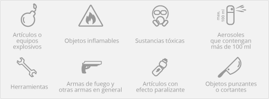

¿Los paquetes de vacaciones valen la pena?
Los paquetes de vacaciones te pueden ayudar a ahorrar mucho dinero al reservar tus vacaciones para 2025, ya que puedes obtener descuentos al reservar varios componentes de tus vacaciones al mismo tiempo, como el hotel y el vuelo.
¿Cómo puedes elegir tu paquete de vacaciones?
Para encontrar el mejor paquete de vacaciones, toma en cuenta el tipo de viaje y el destino que deseas. Utiliza la función de búsqueda del sitio web para encontrar una gran variedad de paquetes disponibles en el destino que elegiste, y aprovecha los filtros de búsqueda para obtener opciones más específicas según el tipo de vacaciones. Explora nuestras ofertas.
¿A dónde me voy de vacaciones?
Los paquetes de vacaciones en Hawái son especialmente populares entre las familias y las parejas, y los paquetes en Disney World son ideales para las familias. Piensa en el tipo de vacaciones que deseas para elegir el mejor destino.
¿Cuáles son algunos de los mejores lugares para ir de vacaciones?
Si quieres conocer los mejores lugares para ir de vacaciones, puedes explorar las vacaciones baratas en el Caribe y los paquetes de vacaciones en Europa. Los paquetes de vacaciones pueden ofrecerte una aventura inolvidable llena de cultura, historia y belleza natural en estos destinos.
¿Cuáles son algunas de las mejores opciones de vacaciones en pareja?
Si quieres una aventura más romántica con tu pareja, puedes reservar los paquetes de vacaciones en Honolulu. También puedes elegir una opción más tradicional y reservar un paquete de vacaciones en París. Incluso puedes disfrutar una escapada económica de tres días.
¿Cómo puedo cancelar mi reserva?
Para solicitar la cancelación de tu reserva, accede a "Mis Viajes"
¿Qué precio tiene cambiar una reserva?
En el caso de que las condiciones de tarifa de tu billete permitan realizar modificaciones, la compañía aérea te solicitará pagar la diferencia de precio entre la tarifa del billete inicial y el precio de la tarifa del nuevo billete. En algunos casos, la compañía aérea puede aplicar de igual forma otros cargos como penalizaciones en concepto de cambio.
¿Cuánto puedo llevar de equipaje en el avión?
La franquicia de equipaje es el límite estipulado por la compañía aérea respecto al número de bultos que puede llevar cada pasajero. Ese límite depende tanto de la compañía aérea como de la tarifa reservada. Ten en cuenta que las tarifas más restrictivas no suelen permitir la facturación gratuita de equipaje o éste puede estar restringido a cierto peso.
¿Cómo puedo comprobar mi franquicia de equipaje?
En general, el peso máximo permitido por las compañías aéreas regulares es de 20 o 23 kg y entre 15-20 kg. Maleta de mano con unas medidas de 55 cm x 40 cm x 10 kg de peso. Además, en algunos vuelos puedes llevar contigo un accesorio personal.
¿Qué es lo que no se puede llevar en el avión?
Por cuestiones de seguridad, existen ciertas limitaciones respecto al tipo de artículos que se pueden llevar a bordo, sea equipaje de mano o facturado. Estas limitaciones dependen de cada aeropuerto o incluso cada campañía aérea.
En general, no está permitido llevar los siguientes artículos como equipaje de mano:

¿Cómo hago el check-in online?
Tan solo tienes que seguir estos pasos:
- Selecciona en "Mis viajes"
- Toca el botón hacer check-in